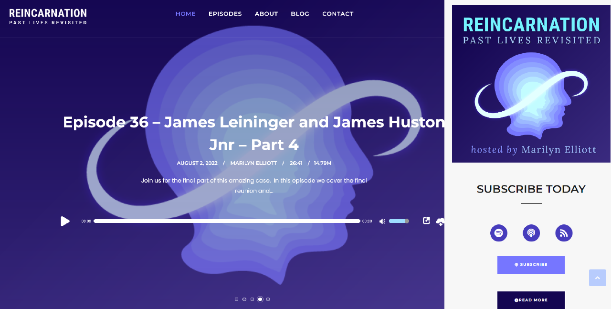

Recent Works
Projects I have worked on

These are the achieved requirements:
Podcast Website / Branding
Skills Used:
HTML/CSS PHP WordPress cPanel XAMPP Adobe SuiteThe client approached me with the brief of needing a fully functional, responsive website. This was achieved via WordPress with plugins / theme integration.
Full branding was also provided, including logo, podcast cover and social media imagery.
These are the achieved requirements:
- - Auto upload new podcasts from an RSS feed
- - Call to action for users to become a Patron
- - A blog section for the host to post related news
- - Episode pages with working media integration
- - Space for adding episode transcripts
- - Brand awareness throughout with custom CSS
- - Auto upload new podcasts from an RSS feed
- - Call to action for users to become a Patron
- - A blog section for the host to post related news
- - Episode pages with working media integration
- - Space for adding episode transcripts
- - Brand awareness throughout with custom CSS

Work Example 2
Brief desc goes here

Work Example 3
Brief desc goes here